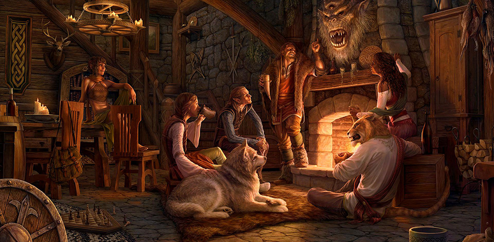

Unlock a Costume Fit for a Lord with Rockstar Energy Drinks
Buy cans of specially labeled Rockstar Energy Drink and redeem their codes to unlock the Morthal Jarl Finery costume, free!
Continue reading
ESO's November 2024 Survival Guide
Enjoy Update 44 on all platforms, a return to High Isle, and more during another packed month of The Elder Scrolls Online!
Continue reading

Crown Store Showcase—November 2024
Fill your hold in preparation for your journey to the Systres Isles with a fine assortment of items and collectibles coming to the Crown Store this November.
Continue readingShare Your Festive Witches Festival (or Halloween) Inspired Creations!

Daily Login Rewards—November 2024
Wear the cycle of life and death with these free rewards you can claim by logging in to The Elder Scrolls Online this November.
Continue reading
Update 44 Base-Game Patch Now Live on PC/Mac
Find glory in the updated Battlegrounds, recruit new Companions, and develop your mastery of Scribing in the Update 44 base-game patch.
Continue reading
Terrorize Tamriel with NVIDIA GeForce NOW and Unlock a Free Collectible!
Experience The Elder Scrolls Online with
Continue reading
Hack at Horrors and Harrow Hollowjack Himself as the Witches Festival Returns
Face down the horrors of Tamriel, including Lord Hollowjack himself, for special in-game rewards during 2024's Witches Festival in-game event!
Continue reading
Discover Bonus Rewards When Venturing Across Tamriel during the Explorer's Celebration
Make the most out of buffs to XP and more during the Explorer's Celebration in-game event!
Continue reading
Seek Ayleid Relics to Unlock Rewards during the Fallen Leaves of West Weald Event
Delve into the history of the Heartland elves and unlock special rewards for all Gold Road players during a new event!
Continue reading
Crown Store Showcase—October 2024
Get your ghastly goodies from the Crown Store this October and prepare to summon the spooky season.
Continue reading
ESO's October 2024 Survival Guide
More events, promotions, and the launch of Update 44 on PC/Mac awaits in the jam-packed month of October!
Continue reading
Daily Login Rewards—October 2024
Create a spooky scene in your home with this month's Daily Login Rewards.
Continue reading
Save Up to 50% on the Gold Road Chapter During the Fallen Leaves of West Weald
Save BIG on the newest ESO Chapter and begin exploring the West Weald region during this special sale and event period.
Continue reading
Anniversary Spotlight—Dress to Hex with this Ghoulish Apparel
Pick up an assortment of creepy goodies, including frightening costumes and furnishings, during October's Anniversary Spotlight!
Continue reading
Update 44 Now Live on the Public Test Server!
Recruit new Companions and battle your fellow players in the reworked Battlegrounds with Update 44, now available on the Public Test Server.
Continue reading
Check Out What You Missed During the Update 44 Preview Livestream
Missed the Update 44 preview livestream? Get caught up on the Battlegrounds refresh, new Companions, and more.
Continue reading
Embrace Sithis with the New Dark Brotherhood Crown Crates
Stalk about Tamriel in secretive and sinister styles with the items and collectibles found in the new Dark Brotherhood Crown Crates.
Continue reading
Earn Bonus Loot When Delving into Tamriel's Dungeons during the Undaunted Celebration
Receive exciting bonus rewards when conquering Tamriel's dungeons during the Undaunted Celebration in-game event.
Continue reading
Update 43 Base-Game Patch Now Live on All Platforms
Return to the Infinite Archive, receive new visitors with Home Tours, and discover other additions and fixes—all part of the Update 43 base-game patch.
Continue reading
Retreat to a Serene Seaside Home with the New Housing Starter Pack!
Pick up the all-new Housing Starter Pack today to enjoy the stunning Seabloom Villa home and Crown bundle.
Continue readingUnlock a Costume Fit for a Lord with Rockstar Energy Drinks
Buy cans of specially labeled Rockstar Energy Drink and redeem their codes to unlock the Morthal Jarl Finery costume, free!
Taming the wilds (and locals) of Skyrim takes fortitude and stamina, and few are more stalwart than the Jarls of Hjaalmarch. Now, you can acquire the Morthal Jarl Finery costume by redeeming points found on specially marked cans of Rockstar Energy Drinks (look under the tab).

Unlock this costume
You can find these special cans at your local grocery and convenience stores. Once you have your code, visit DoritosDewRockstar.com to find more information, rules, and start collecting points.
Are you eager to walk the streets of Morthal while wearing this commanding costume? Let us know via X (formerly Twitter), Instagram, and Facebook.
ESO's November 2024 Survival Guide
Enjoy Update 44 on all platforms, a return to High Isle, and more during another packed month of The Elder Scrolls Online!
November 2024 is here, and it brings a variety of exciting events, offers, and entertainment with it. This month, enjoy everything from the mayhem of new PvP Battlegrounds to a brand-new event. Want to know more? Check out (almost) everything coming to ESO below.
Experience Boost Mini-Event (11/7-11/12)
Want to hit that next level up or collect some more Champion Points? Do it faster with the Experience Boost mini-event that grants a 100% boost to XP earned for the duration. Please note, Event Tickets do not drop during mini-events.
Update 44 Console Launch (11/13)
After launching on PC/Mac in October, Update 44 makes its way to Xbox and PlayStation consoles on November 13. Enjoy the company of new companions, the challenge of revamped Battlegrounds, expanded customization options through Scribing and Skill Styles, and more!
Game Pass Perks (11/13-1/12)
You can claim more perks with Xbox Game Pass Ultimate in November as our fourth bundle of perks launches on November 13. Look for an official announcement on elderscrollsonline.com with more information on the day!
Battlegrounds Domination Weekend (11/14-11/19)
Take part in Battlegrounds, newly revamped in Update 44, with as many Domination matches as you care to … well, dominate!
November Anniversary Spotlight (11/18-11/25)
Expect the Anniversary Spotlight for November, featuring ESO's first Golden Pursuits campaign, in the middle of the month. No peeking!
ESO Battlegrounds Brawl Livestream (11/20)
On November 20, you can spectate a day of Battlegrounds-themed livestreams featuring teams made up of developers, streamers, and our friends from Alienware Hive. Get ready for Twitch Drops and an exciting day of PvP action. You can get in on the PvP action by queuing for Battlegrounds in-game!
Legacy of the Bretons Celebration (11/21-12/3)
Cap off the month with a new in-game event that highlights 2022's Legacy of the Bretons storyline and zones. Check out the official website when we get closer to the event for more details.

November 2024 Roadmap
This November is shaping up to be a great month, with events, promotions, and the release of our latest base-game update on all platforms. Which of the month's offerings are you most excited about? Let us know via X (formerly Twitter), Instagram, and Facebook.
Update 44 Known Issues List
List of Known Issues
Banner Bearer Skill Issue Resolved Oct. 30
- The Banner Bearer skill is not working as intended. It is causing a variety of unintended interactions with other skills.
- [Status] We have identified the issue and this will be resolved via a hotfix on October 30, 2024.
Battlegrounds Competitive Leaderboards Resolved on Nov.1
- The Battlegrounds competitive leaderboards are currently not working as intended, including leaderboard reward delivery.
- [Status] We are currently investigating this issue to work toward a fix. For the time being, we have locked leaderboards.
Battlegrounds Not Starting Properly [Resolved on Nov. 1
- There is currently an issue in 8v8 Battlegrounds where the battleground is not filling all teams correctly and failing to start the battleground.
- [Status] We have reproduced this issue and working toward a fix.
Umaril's Radiance Elk Mount Resolved Oct. 30
- Currently, the Umaril's Radiance Elk is not working as intended and invisible to players.
- [Status] We have identified the issue and this will be resolved via a hotfix on October 30, 2024.
Client Crash Issue Resolved on Nov. 1
- We have identified an issue where certain effects can result in a rare client to crash to desktop.
- [Status] We are investigating the cause of these minor crashes.
Crypt of Hearts I: Death's Leviathan Encounter Resolved Oct. 30
- When players join the Death's Leviathan Encounter in progress, sometimes the upon the boss death, the encounter does not end and stops progression. This is not intended.
- [Status] We have identified the issue and this will be resolved via a hotfix on October 30, 2024.
Strid River Valley Battlegrounds Map
- The Strid River Valley Map is missing the river part.
- [Status] We have identified the issue to restore the water to the river. In tomorrow's hotfix (Oct. 30) we have temporarily removed the Strid River Valley Battleground from the Battleground Queue options until we are able to get the ship floating in water appropriately, with slaughterfish.
Chaosball Cannot Be Picked Up In A Transformed State
- Players who are transformed into forms other than their standard humanoid form will no longer be able to pick up Chaos Balls which also Transform you into Behemoths or Vampire Lords. Standard Chaos Balls can be picked up while transformed if the Chaosball is in its native location, but not in the wild if you are transformed.
- [Status] This is currently working as intended because we found issues during PTS would be problematic on the live server. This was the best way we could address it in the time we had before launch. However, we plan to address this in a future update to be consistent regardless of your transformation status when interacting with the Chaosball.
Ranked Competitor Achievement
- Currently this achievement in being incorrectly gained through standard queue play, rather than competitive play.
- [Status] We are working on a fix and this will be resolved in a future update.
Pumpkin Spectre Polymorph
- The Pumpkin Spectre Polymorph is currently displaying the incorrect visual color.
- [Status] We have identified the issue and this will be fixed in a future incremental update.
Infinite Archive Bugs
- Various resolved bugs have creeped back up.
- [Status] We are investigating what bugs are back and working to resolve these issues again.
Seeker Synthesis Set
- The Seeker Synthesis Set is currently not working as intended. The set is locking potions in a permanent cooldown.
- [Status] We are actively investigating this issue.
Chatbox Text disappearing
- We have identified an issue where clicking in and out of the chatbox with text already in the chatbox causes the text to disappear.
- [Status] We are investigating this issue currently.
Excavation Bonus Items
- We have reports of several purple quality excavations that didn't register the bonus rewards.
- [Status] We have identified the issue and are working toward a fix for the next incremental patch.
Missing Spanish Translation for Tanlorin Quest
- During Tanlorin's questline, some of the Spanish translation is missing when you arrive at the greenhouse to talk to Jacinto.
- [Status] We have identified the issue and are working toward a fix.
Decorative Wall Drape, Mauve
- This furnishing is not displaying the correct color, Mauve.
- [Status] We have identified a fix and will have this fixed in our next incremental patch.
UserSettings.txt bug
- Players identified an issue where the UserSettings.txt was not working as intended.
- [Status] This bug as been identified and we are working on a fix for the next incremental patch.
Breton Interior Assets
- Some of the Breton interior walls in the Fells Run Inn are invisible.
- [Status] We have identified the issue and working toward a fix for our next incremental patch.
The Grip of Madness Quest
- We have seen reports of players who are unable to continue the quest after entering the "East Sepulcher" during the quest step "Lower the Bridge".
- [Status] The issue has been identified and targeting an fix for the next incremental patch.
Battleground Spectators Removed For Inactivity
- We have seen a few reports of players being removed for inactivity when spectating in Battlegrounds matches.
- [Status] The issue has been identified and targeting an fix for the next incremental patch.
Cyrodill Repair Kits Resolved on Nov. 1
- We are aware of the issue regarding Cyrodill Repair Kits not working as intended.
- [Status] This is currently under investigation and we are looking to resolve this as soon as possible. Update here.
Anniversary Cake Slice not returning to bag. Resolved on Nov. 1
- We identified an issue where when the Anniversary Cake Slice was used, it could not be returned to your bag.
- [Status] The issue has been identified and targeting an fix for the Nov. 1 hotfix.
Crown Store Showcase—November 2024
Fill your hold in preparation for your journey to the Systres Isles with a fine assortment of items and collectibles coming to the Crown Store this November.
Below, you can discover all the new and returning items coming to the in-game Crown Store during the month of November 2024. Don't forget, you can also check out what's currently available by visiting the Crown Store page. Anything catch your eye? Don't forget to visit the Buy Crowns page to acquire however many crowns you need! Certain items and offers are available for a limited time only, so be sure to read their details below and don't miss out.
ESO Plus Deals
All ESO Plus™ members have access to a monthly selection of exclusive deals and items. You can find more information about them in this article.
Exclusive Free Items
Painting: Lucent Citadel

Shrouded in mystery, the Lucent Citadel gleams in the sand of Fargrave's wastelands.
Painting: Lucent Citadel will be available in the Crown Store FREE, exclusively to ESO Plus Members on all platforms for a limited time, from November 20, 2024 at 10 AM EST, to January 6, 2025 at 10 AM EST.
Crown Gem and Seals of Endeavor Items
Throne of the Lich

This obsidian-hewn throne was once the seat of power for an ancient necrolord. When seated, lingering enchantments flare dramatic blue flames to life.
The Throne of the Lich will be available for Crown Gems and Seals of Endeavor on all platforms for a limited time, from November 14, 2024 at 10AM EST, to November 21, 2024 at 10AM EST.
Symphony of Dawn Charger

"The Lady of Infinite Energies lent me a steed to hasten my way to Garlas Malatar. A creature of golden light, gleaming barding, a symphony of blades, and an aura reminiscent of the Colored Room, the charger tested my endurance."—King Narilmor's Journal
The Symphony of Dawn Charger mount will be available for Crown Gems and Seals of Endeavor on all platforms for a limited time, from November 21, 2024 at 10AM EST, to November 27, 2024 at 10AM EST.
Crafting
Crown Crafting Motif: West Weald Legion

Steward Felicita Agrance writes, "The Legion of West Weald has long been a paragon of military prowess and organization." Use to learn the West Weald Legion crafting style.
The new Crown Crafting Motif: West Weald Legion arrives to the Crown Store on all platforms on November 7, 2024, at 10AM EST. West Weald Legion chapters, and very rarely the complete book, have a chance to drop from Skingrad Reward Coffers, acquired by completing daily Mirrormoor Mosaic quests from Legionary Jaida in Skingrad.
Crown Crafting Motif: Silver Dawn

Archivist Ernarde exhorts,"Hunt for heinous were-creatures with pride wearing and wielding the traditional arms and armor of the Order of the Silver Dawn! By the gleam of silver shall we slay!" Use to learn the Silver Dawn crafting style.
The Crown Crafting Motif: Silver Dawn will be available in the Crown Store on all platforms for a limited time, from November 25, 2024 at 10AM EST, to December 2, 2024 at 10AM EST. ESO Plus Members will receive a discount on this item. Silver Dawn chapters, and very rarely the complete book, have a chance to drop from Vykosa the Ascendant in the Moon Hunter Keep dungeon. Harder difficulties will increase the chances of the item dropping.
Outfit Style
Elder Scrolls Artifact: Fearstruck

Alter your shield's Outfit style with a replica of the Fearstruck Elder Scrolls Artifact, a shield crafted by the Daedric Prince Boethiah.
The Elder Scrolls Artifact: Fearstruck will be available in the Crown Store on all platforms for a limited time, from November 4, 2024 at 10AM EST, to November 11, 2024 at 10AM EST. ESO Plus Members will receive a discount on this item.
Evergloam Champion Armor Pack

Adherents of Nocturnal who venture to the Evergloam sometimes come back changed in more ways than one—the armor of that realm may hold greater appeal to the Daedric Prince of Shadow's followers than any mortal gear they initially wore. Alter your armor's appearance by using this complete set of Evergloam Champion Armor Outfit styles.
The Evergloam Champion Armor Pack will be available in the Crown Store on all platforms for a limited time, from November 11, 2024, at 10AM EST, to November 18, 2024 at 10AM EST. ESO Plus Members will receive a discount on this item.
Armory Slot

This unlocks 1 additional armory build for this character. Builds can be modified at an Armory Station.
The Armory Slot will be available in the Crown Store on all platforms for a limited time, from November 11, 2024 at 10AM EST, to November 18, 2024 at 10AM EST. ESO Plus Members will receive a discount on this item.
Crested Viper Armor Pack

Ready to intimidate all who cross your path? Alter your armor's appearance by using this complete set of Crested Viper Outfit styles.
The Crested Viper Armor Pack will be available in the Crown Store on all platforms for a limited time, from November 18, 2024, at 10AM EST, to November 25, 2024 at 10AM EST. ESO Plus Members will receive a discount on this item.
Legacy of the Draoife Arms Pack

Firesong druids serving on the druidic council inspired weaponsmiths to create arms inspired by their garb. Alter your weapon's appearance to match the Legacy of the Draoife Weapons by using this complete set of Outfit styles.
The new Legacy of the Draoife Arms Pack will be available in the Crown Store on all platforms for a limited time, from November 21, 2024, at 10AM EST, to November 27, 2024 at 10AM EST. Matching armor pages will have a small chance to drop from Event Coffers. Bound versions of the armor pages can be purchased from the Impresario for 5 Event Tickets each during the event.
Imperial Champion Armor Pack

Before championing the Imperial cause and donning their armor for the first time, elite warriors swear undying loyalty to the emperor and its officers. Alter your armor's appearance by using this complete set of Imperial Champion Outfit styles.
The Imperial Champion Armor Pack will be available in the Crown Store on all platforms for a limited time, from November 27, 2024, at 10AM EST, to December 5, 2024 at 10AM EST. ESO Plus Members will receive a discount on this item.
Wardrobe
Costumes
Subterrane Excavator

Spelunk in luxury! This mining gear is practically a home away from home when you're excavating precious underground resources—if you like living in your clothes!
The Subterrane Excavator costume will be available in the Crown Store on all platforms for a limited time, from November 4, 2024 at 10AM EST, to November 11, 2024 at 10AM EST. ESO Plus Members will receive a discount on this item.
Hats
Flatbrim Mourning Hat Pack

Bundle including three Flatbrim Hats: the Modest Mourning Hat, Deluxe Mourning Hat, and Plumed Mourning Hat.
The Flatbrim Mourning Hat Pack will be available in the Crown Store on all platforms for a limited time, from November 25, 2024 at 10AM EST, to December 2, 2024 at 10AM EST. ESO Plus Members will receive a discount on this item.
Crate
Ayleid Crate

A mystery collection of Ayleid related items!
Ayleid Crates will return to the Crown Store on all platforms for a limited time, from November 7, 2024 at 10AM EST, to November 21, 2024 at 10AM EST.
Akaviri Potentate Crate

A mystery collection of Akaviri Potentate related items!
Akaviri Potentate Crates will return to the Crown Store on all platforms for a limited time, from November 21, 2024 at 10AM EST, to November 27, 2024 at 10AM EST.
Furniture
Apocryphal Shifting Sculpture

Watch mesmerized as this sculpture from Apocrypha shifts and morphs languidly. Perfect for those times when you just need to stare at something while organizing your thoughts.
The Apocryphal Shifting Sculpture will be available in the Crown Store on all platforms for a limited time, from November 4, 2024 at 10AM EST, to November 11, 2024 at 10AM EST. ESO Plus Members will receive a discount on this item.
Music Box, A Clash of Fang and Flame

When activated, plays the rousing music box composition "A Clash of Fang and Flame."
The Music Box, A Clash of Fang and Flame will be available in the Crown Store on all platforms for a limited time, from November 14, 2024 at 10AM EST, to November 21, 2024 at 10AM EST. ESO Plus Members will receive a discount on this item.
Cadwell's Astounding Portal

Ready for a jolly good time with Cadwell? Summon him to your home with this handy portal, and he'll play a tune, juggle fish, indulge in some chit-chat, or more!
The Cadwell's Astounding Portal will be available in the Crown Store on all platforms for a limited time, from November 14, 2024 at 10AM EST, to November 21, 2024 at 10AM EST. ESO Plus Members will receive a discount on this item.
Furnishing Pack: Chapel of Zenithar

Though Zenithar is known as the God of Work and Commerce, he also represents the peace and prosperity that comes with great effort. Now you can decorate your own place of worship to venerate this industrious Divine.
The Furnishing Pack: Chapel of Zenithar will be available in the Crown Store on all platforms for a limited time, from November 14, 2024 at 10AM EST, to November 21, 2024 at 10AM EST. ESO Plus Members will receive a discount on this item.
Music Box, Gonfalon Galliard

When activated, plays a music box arrangement of the sprightly "Gonfalon Galliard" composition.
The Music Box, Gonfalon Galliard will be available in the Crown Store on all platforms for a limited time, from November 21, 2024 at 10AM EST, to December 5, 2024 at 10AM EST. ESO Plus Members will receive a discount on this item.
Houses
Grand Psijic Villa

When Artaeum was "removed" from Tamriel, a few neighboring isles went with it, including the site of the Grand Psijic Villa, a monumental estate with magnificent views of the south coast of the main island.
The Grand Psijic Villa returns to the Crown Store on all platforms for a limited time, from November 14, 2024 at 10AM EST, to November 27, 2024 at 10AM EST. Furnished and unfurnished versions will be available.
Highhallow Hold

Variously held by both House Dufort and Mornard, this stately manor near the edge of Gonfalon Bay is now available to the adventurer-about-town. It commands a majestic view of the water and provides easy access to the jewel of High Isle.
The Highhallow Hold returns to the Crown Store on all platforms for a limited time, from November 21, 2024 at 10AM EST, to December 5, 2024 at 10AM EST. Furnished and unfurnished versions will be available.
Lakemire Xanmeer Manor

Stay moist in an underwater Xanmeer Manor with its own submerged picture windows! Gaze into the depths of a lush Murkmire lake from the sunken interior of this capacious Argonian edifice, where comfort mixes casually with the bizarre. Xuth!
The Lakemire Xanmeer Manor returns to the Crown Store on all platforms for a limited time, from November 27, 2024 at 10AM EST, to December 12, 2024 at 10AM EST. Furnished and unfurnished versions will be available.
Houseguests
Squire Caw

Is your home bedecked in shiny treasures? Did you leave carrion out in the sun? Regardless, Blackfeather Court's most nettlesome squire noticed! After adding Squire Caw to your home, you can set him on a path, plus you and your visitors can speak with him.
Squire Caw will be available in the Crown Store on all platforms for a limited time, from November 21, 2024, at 10AM EST, to November 27, 2024 at 10AM EST. ESO Plus Members will receive a discount on this item.
Assistants
Pyroclast, Infernace Conservator

Hailing from the pocket realm of Infernace, Pyroclast will holdfast your items (or the items of your groupmates) in the fiery pits of Oblivion. Minor scorching may occur.
The Pyroclast, Infernace Conservator assistant will be available in the Crown Store on all platforms for a limited time, from November 11, 2024, at 10AM EST, to November 18, 2024 at 10AM EST. ESO Plus Members will receive a discount on this item.
Hoarfrost, Takubar Trader

Summoned from the fourth Sinus of Takubar, Hoarfrost will convey your goods (or the goods of your groupmates) to the cold-flame pits of Oblivion in exchange for mortal coins.
The Hoarfrost, Takubar Trader assistant will be available in the Crown Store on all platforms for a limited time, from November 11, 2024, at 10AM EST, to November 18, 2024 at 10AM EST. ESO Plus Members will receive a discount on this item.
Mounts
Shallowstalker Ornaug

The shimmering blues and purples of this ornaug mimic the coral shallows around Galen. If you stumble upon these playful creatures cavorting in the water, move slowly and you may just tickle their curiosity. If they like you, one might even adopt you.
The Shallowstalker Ornaug mount returns to the Crown Store on all platforms for a limited time, from November 4, 2024 at 10AM EST, to November 11, 2024 at 10AM EST. ESO Plus Members will receive a discount on this item.
Black Drake Howler

These wolves were among the first creatures to storm Evermore when the Reachmen's attack broke through the city's walls. Each wolf's unique markings display their lineage with some incorporating designs from Durcorach's beloved howler herself.
The Black Drake Howler mount returns to the Crown Store on all platforms for a limited time, from November 11, 2024 at 10AM EST, to November 14, 2024 at 10AM EST.
Oaken Order Mountain Goat

Cavalry masters of the Oaken Order diligently trained mountain goats to the bridle. Now, these surefooted creatures are both mounts and companions. None can match their spirit or persistence, or so the wizardly knights boast.
The Oaken Order Mountain Goat mount will be available in the Crown Store on all platforms for a limited time, from November 14, 2024 at 10AM EST, to November 21, 2024 at 10AM EST. ESO Plus Members will receive a discount on this item.
Turquoise War Pangrit

"Some claim the Hadolids created the pangrits somehow. I suspect they simply tamed these spiky beasts. If they'd made them, they'd be smarter. If a pangrit wants something, they poke you. Learn quickly how to tell what they want!"—Saissula, Stablemaster
The Turquoise War Pangrit mount will be available in the Crown Store on all platforms for a limited time, from November 25, 2024 at 10AM EST, to December 2, 2024 at 10AM EST. ESO Plus Members will receive a discount on this item.
Pets
Blightlord's Skeever

"I'd heard that Peryite followers wake up to find their skeevers transformed by his blessing. Never really thought about it until I woke up next to one. We're fine now, but by my Prince's pustules, those first moments got my battle rage up."—Yamighu
The Blightlord's Skeever pet will be available in the Crown Store on all platforms for a limited time, from November 11, 2024 at 10AM EST, to November 18, 2024 at 10AM EST. ESO Plus Members will receive a discount on this item.
Scruffy Skyrim Paint Pony

Hardy and good-natured, the faithful Skyrim Paint Pony wants to be near its master regardless of the weather, leaning into the wind even in a tundra blizzard.
The Scruffy Skyrim Paint Pony pet will be available in the Crown Store on all platforms for a limited time, from November 18, 2024 at 10AM EST, to November 25, 2024 at 10AM EST. ESO Plus Members will receive a discount on this item.
Breton Terrier

Originally bred to find and kill rats on the docks of the Iliac Bay, the Breton Terrier has found a place in the hearts and minds of many Tamrielics due to its joyful and wriggly behavior.
The Breton Terrier pet will be available in the Crown Store on all platforms for a limited time, from November 25, 2024 at 10AM EST, to December 2, 2024 at 10AM EST. ESO Plus Members will receive a discount on this item.
From island getaways to dockside dogs, this month's Crown Store offerings will surely help you navigate towards high (isle) fashion and fun! Have you found the treasure you've been searching for amidst this month's offerings? Be sure to stock up on crowns by heading to the Buy Crowns page first. Which of these new or returning items featured in this showcase are you most excited to acquire? Let us know via X (formerly Twitter), Instagram, and Facebook.
Share Your Festive Witches Festival (or Halloween) Inspired Creations!

Daily Login Rewards—November 2024
Wear the cycle of life and death with these free rewards you can claim by logging in to The Elder Scrolls Online this November.
A new month is about to begin, and along with it comes a fresh assortment of free rewards ready to be claimed via the Daily Login Rewards system! Itching to discover what goodies await you this November? Check out a few of the highlights below. And if you are curious to learn how Daily Login Rewards work, be sure to read over this help article that'll include all you need to know.
Instant All Research Scroll ×10—Days 7

Quickly Master New Crafting Traits
With these Research Scrolls, you can accelerate unlocking new Blacksmithing, Clothing, Woodworking, and Jewelry crafting traits, available on your seventh login this month!
Face Marking: Cycle Behind the Stars—Days 14

Symbolize the wind guardian's embrace
Update your looks with the Cycle Behind the Stars face markings, ready to be claimed after 14 days of logins this month.
Body Marking: Cycle Behind the Stars—Days 15

Honor the lost with this decorative body marking
Preserve the memory of passed loved ones with these ornamental body markings. Unlock the Cycle Behind the Stars body markings after your 15th login.
Seals of Endeavor ×300—Day 21

Cash in with these Seals of Endeavor
Has a Crown Crate goodie caught your eye? Luckily, you can pick up an assortment of 300 Seals of Endeavor. These can help you acquire whatever Crown Crate item you fancy and are available after logging in for 21 days this month. Learn more about Seals of Endeavor in this guide.
This is just a preview of all the rewards you can claim this November. If you want to view a full list, head over to the Daily Rewards section of the in-game Crown Store on November 1 to learn more! Are you excited to unlock 30 complimentary rewards by logging in to ESO every day this month? Let us know via X (formerly Twitter), Instagram, and Facebook.
Update 44 Base-Game Patch Now Live on PC/Mac
Find glory in the updated Battlegrounds, recruit new Companions, and develop your mastery of Scribing in the Update 44 base-game patch.
The Update 44 base-game patch is now live on PC/Mac, and it introduces a host of changes, fixes, and additions to The Elder Scrolls Online.

This update is free for all ESO players (and will be automatically downloaded and patched by the game), but note that the two new Companions require either ESO Plus™ membership or purchase from the Crown Store to access. Check out the full patch notes for Update 44 on our official forums.
New Features
The Update 44 base-game patch adds a ton of new features, challenges, and rewards to the game.
Battlegrounds Update
ESO's fast-paced PvP experience, Battlegrounds, has undergone a series of dramatic changes designed to make the game mode (originally introduced with the Morrowind Chapter back in 2017) more competitive and fun for every type of player.

Changes include a shift from the original 4v4v4 to the new 4v4 and 8v8-sized matches, the addition of seven brand-new maps of various sizes, new rewards and mechanics, and a unique leaderboard for the 4v4 competitive-styled option.
To jump right into the action, use the Activity Finder, select Battlegrounds, and select your match size. No matter what kind of PvP player you are, you can enjoy the frenetic action of the new-look Battlegrounds—to glory!
New Companions
Update 44 also introduces two brand-new Companions for you to recruit and adventure with: Tanlorin and Zerith-var. The High Elf outcast Tanlorin mixes Dragonknight and Soul Magic abilities (the first Companion to do so). Zerith-var, on the other hand, is a Khajiit Necromancer from the distant past.

Tanlorin and Zerith-var
Both Companions have their own passive abilities to unlock along with their own questlines and stories to tell, giving you the opportunity to discover more about these interesting adventuring allies.
Note that to unlock both new allies, you need to find them within the Companions section of the in-game Crown Store. They are listed as free for ESO Plus members or available for purchase with crowns if you don't currently have an active membership. Once unlocked, you can find Tanlorin just outside Vulkhel Guard in Auridon and Zerith-var near Moonmont in Reaper's March.
New Grimoire, Scripts, Skill Styles, and More
First introduced with the Gold Road Chapter and Update 42 in June, the Scribing System also continues to expand with Update 44. This includes a brand-new Grimoire to unlock and customize, called Banner Bearer. Banner Bearer is part of the Support Skill Line and grants you the ability to throw a banner on your back and buff your group's abilities based on your chosen Focus.

Master new abilities and styles
In addition to this new ability, 14 existing scripts are now applicable to nine launch Grimoires, and a selection of four new Skill Styles help you stand out on the battlefield. Skill Styles include a molten variant for the Puncture ability, a wildburn variant for Force Shock, and more.
You can acquire the new Banner Bearer Grimoire from Chronicler Firandil within the Scholarium. Check the patch notes for a complete list of Scribing additions. Don't forget, you need access to the Gold Road Chapter to begin your Scribing journey.
Golden Pursuits
A new way to earn in-game collectibles, items, and currencies, Golden Pursuits is a new reward system included with Update 44. Highly variable, a Golden Pursuits campaign asks players to complete various tasks as they adventure in Tamriel with a series of rewards granted for specific milestones.

Earn rewards with Golden Pursuits
The first Golden Pursuits campaign won't be active until the middle of November, so keep an eye out for an official announcement and get ready to earn new in-game rewards.
Imperial City Changes
If you enjoy battling both your fellow players AND invading Daedra in the heart of the empire, the Imperial City has also undergone a few changes within its war-torn streets and sewers. This includes improvements to how Imperial Vaults work. For starters, Imperial City keys and key fragments convert to Imperial Fragments, and vault treasure chests become vendors.
In addition, many of the area's existing vendors have enjoyed upgrades to their wares, including their quality and selection. With Update 44, plundering the capital has never been more rewarding!
Additional Features & Improvements
Arriving in tandem with the above new features are a series of improvements, additions, and features that all ESO players will appreciate. This includes:
- An increase of furnishing base materials in regular harvest nodes
- HDR support for PC players
- Including various new visual settings such as HDR scene brightness and contrast
- The addition of quest pips for Master Writs
- Including both quest markers and objective tracking
- The addition of bonus PvP perks for ESO Plus members
- 10% boost to Alliance Points earned (the currency), your PvP Skill Line ranks, and Alliance rank (not leaderboards or Rewards for the Worthy grant rate)
- 10% boost to Tel Var Stones gained from killing monsters
These are just some of the changes and additions coming with Update 44. For more on all of the above and info on the bugfixes and balance tweaks arriving with this new base-game patch, be sure to check out the Patch Notes on our official forums.
New Battles, Allies, and Rewards
Whether you're an experienced veteran of ESO's fast-paced PvP mode, a humble adventurer seeking new allies, or an explorer of the unknown pursuing new powers and rewards, Update 44 has something for you! Are you ready to rejoin the Battlegrounds? Which Companion will you recruit first? Tell us via X (formerly Twitter), Instagram, and Facebook.
The Update 44 base-game patch is now live on PC/Mac and arrives on Xbox One, Xbox Series X|S, PlayStation 4, and PlayStation 5 on November 13.
Terrorize Tamriel with NVIDIA GeForce NOW and Unlock a Free Collectible!
Experience The Elder Scrolls Online with NVIDIA's GeForce NOW and you can claim the Stag-Heart Skull Sallet hat.
As the 10-Year Anniversary Celebration continues, we're excited to announce another promotion with our friends at NVIDIA. For a limited time, you can acquire the Stag-Heart Skull Sallet hat while experiencing ESO on the device of your choice using NVIDIA GeForce NOW.
As a GeForce NOW member, you can claim your free hat by opting into rewards and checking your email for instructions. If you're a Premium member, you can redeem this complementary goodie today, while free members can pick it up starting tomorrow, October 25. This fearsome free hat will only be available until November 25!

Intimidate your foes beneath the visage of the Stag-Heart Skull.
First revealed during April's kickoff of the 10-Year Anniversary Celebration, the GeForce NOW cloud gaming service allows any Steam or Epic Games Store player to stream ESO on their devices. Sign up for NVIDIA's Ultimate membership and you can stream up to 4K and 120 fps or enjoy the game at ultrawide resolutions on supported devices. To find out more, visit their official website.
Are you planning on signing up for NVIDIA's GeForce NOW to unlock this free reward and experience ESO on your device of choice? Let us know via X (formerly Twitter), Instagram, and Facebook.
Hack at Horrors and Harrow Hollowjack Himself as the Witches Festival Returns
Face down the horrors of Tamriel, including Lord Hollowjack himself, for special in-game rewards during 2024's Witches Festival in-game event!
This year's Witches Festival begins next Thursday, October 24 and runs until Wednesday, November 6 at 10AM EST. During this spoopy seasonal event, you can claim ghoulishly good event-specific rewards including Plunder Skulls, XP boosts, Event Tickets, and more!
During the Witches Festival, all adventurers will enjoy a passive 100% boost to XP gain at all times. However, the Witchmother's Whistle, once the source of this bonus (and a skeletal transformation!), is still available. To collect the whistle and down ladles of hag's brew for frightful fun, simply follow the steps listed below:
- Open the Crown Store and acquire the free quest “The Witchmother's Bargain.”
- You can also pick up this quest by speaking with the Crow Caller, who you'll find outside of each Olyve's Brewery in Stonefalls, Glenumbra, or Auridon.
- Complete the introductory quest to receive the Witchmother's Whistle tool.
- You won't need to acquire the Witchmother's Whistle if you finished the quest in a previous year's event.
- Blow the whistle to summon the “Witchmother's Cauldron,” from which you can drink to polymorph yourself into a spooky scary skeleton.
- You cannot summon the Cauldron in Cyrodiil.

Drink the witches' brew straight from the cauldron
A Wicked Harvest
During the Witches Festival event, whenever you defeat a boss monster, you'll be offered a Plunder Skull container in addition to any regular rewards.
When you open a Plunder Skull, you have the chance to receive the following items:
- Alchemy reagents
- A festival-themed furnishing recipe
- A festival-themed provisioning recipe
- A complete festival-themed furnishing
- A festival-themed sellable treasure
- A small chance for one of the following:
- A Hollowjack style item
- A Dremora style item
- Worms, Crawlers, Guts, or Insect Parts
What's more, whenever you fell a unique boss type for the first time each day, you'll be rewarded instead with a special Dremora Plunder Skull that contains some of the above items in addition to a chance at one of the following:
- A Witches Festival Writ
- A Glenmoril Treasure Map
- A Glenmoril armor outfit style page
- A Crowborne Hunter outfit style page
- NEW Plunder Skull Blunder Memento Runebox
- NEW Senchal Horned Owl pet fragment
- NEW tradeable style page for the Eltheric Revenant outfit style
Both varieties of Plunder Skull are offered by arena bosses, incursion bosses (from Dark Anchors, Harrowstorms, Volcanic Vents, etc.), delve bosses, final dungeon bosses, Trial bosses, public dungeon bosses, world bosses, and Tho'at Replicanum in Infinite Archive (new for this year!).

Perilous plunder, yours for the taking
There are two additional Plunder Skulls acquirable by those brave (or foolish) enough to face the worst of the Witches Festival's horrors.
The first of these frightful fiends, the Crowborne Horror, returns to Tamriel to bedevil its denizens. To locate and slay this living nightmare, acquire the daily quest “Plucking the Crow” by speaking with Witchmother Taerma, located inside Olyve's Brewery and at every Impresario tent found throughout Tamriel.
For your courage, the first time you overcome the Crowborne Horror and turn in your quest each day, you'll be rewarded with a Dremora Plunder Skull. This creepy container has a small chance to grant you an incredible offering of tradeable Witches Festival valuables instead of regular Dremora Plunder Skull items, including:
- The FULL style book for the Dremora motif
- A folio of ALL Glenmoril treasure maps
- All 10 Senchal Horned Owl Pet Fragments
- Runebox: Plunder Skull Blunder
- All of the Eltheric Revenant Outfit style pages
If even the Crowborne Horror does not daunt you, you may test that fearlessness against the master of monstrosity and sovereign of spookiness, Lord Hollowjack himself. You can acquire the quest to challenge him from the Priest Maxien, located inside Olyve's Brewery. Once you've completed this quest at least once on a given character, you can take it again on subsequent days and skip ahead to challenge Hollowjack directly.
Should you emerge victorious against the Daedric Lord, you'll find the quest reward each day grants a special Dremora Plunder Skull unique to Lord Hollowjack. It has a chance to contain a jackpot like that from the Crowborne Horror, and it awards a special achievement and trophy furnishing to commemorate your victory. A matching collectible bust furnishing can sometimes be acquired from looting Lord Hollowjack.
Impresario & Event Tickets
During the Witches Festival, you can collect two Event Tickets from the first boss you defeat each day, earning up to 28 tickets by the end of the event. But don't forget: You can only hold up to 12 Event Tickets at a time.
For this event, the Impresario will stock the following items:
- All three Molag Bal Illusion Imp pet fragments:
- Anchor Chain Fragment
- Dark Anchor Pinion
- Effigy of the Dominator
- The first two fragments for the Haven of the Five Companions house:
- Varen Aquilarios's Key
- Lyris Titanborn's Key
- Eltheric Revenant outfit style
- Senchal Horned Owl pet fragments
- Assorted spooky Witches Festival-themed furnishings
- Webs, Cone furnishing
- Hollowjack Lantern, Ouroboros furnishing
- Specimen Jar, Spare Brain furnishing
- Ruby Candlefly Gathering furnishing
- Vampiric Lamp, Azure Tall furnishing
- Vampiric Lightpost, Azure Single furnishing
- Vampiric Container, Yellow Liquid furnishing
- Group Repair Kit
- Companion Guild Commendations
- Witches Grab Bag (This is purchasable only if you haven't yet collected all the items contained within)
- Skeletal Marionette memento
- Spectre Mask collectible
- There are four variations of this collectible
- Apple-Bobbing Cauldron fragment
- Throw Bones memento fragment
- Marshmallow Toasty Treat emote
- Witch's Bonfire Dust
- Ghastly Visitation memento
- Witch-Tamed Bear-Dog pet fragment
- Witchmother's Servant outfit style pages
- Tome of Forbidden Appetites memento
- Ghost Netch pet
- Grave Dancer Weapon style pages
Of note: The Witches Festival will be your first opportunity to begin gathering the fragments for the final event morphing collectible of 2024, the Haven of the Five Companions house!

Haven of the Five Companions morphing collectible
Additionally, the Impresario's colleague, Nenulaure the Indrik Vendor, has the following items available for purchase using Event Tickets:
- Nascent Indrik Feathers
- Pure Snow Indrik Berries
- Crimson Indrik Berries
- Frost-Light Indrik pet
- Rosethorn Indrik pet
Lastly, the Impresario's Assistant is offering the following, which you can acquire with Event Tickets:
- All three Unstable Morpholith fragments
- Deadlands Flint
- Rune-Etched Striker
- Smoldering Bloodgrass Tinder
- All three Dagonic Quasigriff fragments
- Smoke-Wreathed Gryphon Feather
- Black Iron Bit
- Bridle Black Iron Stirrups
- All three Soulfire Dragon Illusion Imp pet fragments
- Hallowed Hourglass Basin
- Illuminated Dragon Scroll
- Kvatchian Incense
- All three fragments for the Daggerfall Paladin outfit
- Blessed Rubedite Enamel
- Captured Dragonflame
- Sanctified Metalworking Tools
It's Tamriel's most frightful time of year, and only brave heroes can bring light to the shadows of the season. Will you step up to strike down Lord Hollowjack? You'll be rewarded with XP boosts, collectibles, and other boons for your efforts during the 2024 Witches Festival in-game event. Share your spooky stories with us via X (formerly Twitter), Instagram, and Facebook.
The Witches Festival in-game event begins Thursday, October 24 at 10AM EDT, and runs until Wednesday, November 6 at 10AM EST.
Discover Bonus Rewards When Venturing Across Tamriel during the Explorer's Celebration
Make the most out of buffs to XP and more during the Explorer's Celebration in-game event!
The #ESOFam completed an immense number of quests during the Fallen Leaves of West Weald event. Now, it's time to reap the rewards! Starting today, October 8 at 10AM EDT, you can enjoy bonus rewards (almost) anywhere in Tamriel during the limited-time Explorer's Celebration in-game event.
During the event, you can gain bonuses from the following sources:
- Increased drops from harvest nodes (this does not include fishing or creature drops such as leather)
- +100% XP gains from every source
- These bonuses stack with other XP boosts such as scrolls or group multipliers
- +100% gold earned from monster kills, quest rewards, and similar sources
The bonuses listed above are available to all ESO players in any zone across Tamriel and beyond!
Keep in mind that the Explorer's Celebration event doesn't feature Event Tickets or unique quests, and there aren't any special collectibles or achievements to gather. Additionally, the Impresario has decided to take some time off work, so her shop is not open for business during this event.
This Explorer's Celebration wouldn't have happened without the hard work put forth by the ESO community during the Fallen Leaves of West Weald event, so be sure to enjoy the fruits of your labors!
Speaking of rewards, you have until October 18 to claim your Fallen Leaves of West Weald prizes free from the Crown Store. Don't forget, you need access to the Gold Road Chapter to claim them—don't miss out!
The Explorer's Celebration runs from Tuesday, October 8 at 10AM EDT, until Thursday, October 17 at 10AM EDT.
Seek Ayleid Relics to Unlock Rewards during the Fallen Leaves of West Weald Event
Delve into the history of the Heartland elves and unlock special rewards for all Gold Road players during a new event!
Challenge complete! Gold Road Chapter players can now claim the Fallen Leaves of West Weald Reward Bundle free from the in-game Crown Store until Friday, October 18 at 10AM EDT—don't miss out!
The Fallen Leaves of West Weald in-game event kicks off on Thursday, September 26 at 10AM EDT and continues until Tuesday, October 8. During the event, you can seek out lost relics of the ancient Ayleid empire, learn about the history surrounding Cyrodiil's ancient rulers, and unlock collectible rewards for ALL Gold Road Chapter owners.
Seek Lost Knowledge, Together!
Throughout the event period, you can acquire the new daily quest, “Fallen Leaves of West Weald,” available from Gandrinar, located outside the Skingrad Impresario's tent. To complete this new daily, collect lost Ayleid relics, bundle them, and bring them back to Gandrinar. Doing so will grant event quest rewards (and on occasion, some additional lore about the region's ancient rulers), in addition to progressing the Fallen Leaves of West Weald meter, found on the event's official page.
As the community completes the new daily quest, they help progress a new event meter, unlocking three tiers of rewards:
- 33%—Vineyard Voriplasm pet
- 66% —Luminescing Varla Stone memento
- 100%—Russet Brekka mount, Tree-Sap Legion arms pack, and a nesting rewards box

Unlock these event rewards
When the event ends on October 8 (or as soon the meter reaches 100%), the community can claim all unlocked rewards free from the in-game Crown Store for a limited time. Note that these rewards can be unlocked and claimed ONLY by Gold Road Chapter players, so if you've yet to own ESO's latest adventure, be sure to pick it up.
Be sure to visit the official Fallen Leaves of West Weald page often to check the community's progress and see what rewards have been unlocked.
Bonus Explorer's Celebration
In addition to the event's main meter and rewards, you and your fellow players can also unlock additional days of the subsequent Explorer's Celebration event by completing ANY quests within the West Weald zone.
For every 33% of the bonus meter completed (also found on the official event page), we'll enable three days of the Explorer's Celebration. This bonus mini-event kicks off as soon as the Fallen Leaves of West Weald event ends on October 8 and grants additional XP, Gold, and resource harvesting for everybody in Tamriel during the event period.
Earn Coffers While Adventuring
While the event (and community chase) is ongoing, you can receive a special Sublime Fallen Leaves Coffer for the first West Weald zone daily quest you complete each day AND then earn regular Fallen Leaves Coffers for various activities after.
Note that you can also acquire regular Fallen Leaves Coffers by defeating bosses and monsters, harvesting resource nodes, pickpocketing, or opening treasure chests, safeboxes, psijic portals, Thieves Troves, or other lootable objects within West Weald.
Fallen Leaves Coffers can contain the following items:
- A chance for random crafting materials
- A chance for a Gold Road saleable treasure
- A chance for a style item for Gold Road motifs
- A chance for a Gold Road overland set item
- A chance for Companion gear (with any Companion unlocked)
- A chance for one of the following
- Gold Road furnishings
- Gold Road furnishing recipe
- Gold Road Treasure Map or Survey Report
- Gold Road motif page
- A small chance for a tradeable style page of the new Tree-Sap Legion armor style.
Note that the once-daily Sublime Fallen Leaves Coffer has a higher chance of containing the above rewards than the regular one, but there's no limit to the number of regular coffers you can earn in a single day.

Additional Rewards
As you collect coffers during the event, you can also enjoy the following bonuses within West Weald:
- Zone daily quests and Trial weekly quests (Lucent Citadel) award double non-event reward boxes
- Harvest node yields within Gold Road are increased (not including fishing holes)
- Gold Road world bosses, public dungeon bosses, Trial bosses, and delve bosses all award double loot
Impresario & Event Tickets
During the Fallen Leaves of West Weald event, you can earn two Event Tickets per day by completing Gandrinar's quest, any zone daily quest, or the Lucent Citadel weekly quest. In addition, the Impresario will stock the following items:
- All three Molag Bal Illusion Imp pet fragments
- Anchor Chain Fragment
- Dark Anchor Pinion
- Effigy of the Dominator
- All three Anchorborn Welwa mount fragments
- Bizarre Daedric Meat
- Fine Ebonsteel Chain
- Strengthened Welwa Muzzle
- Bound style pages for the Tree-Sap Legion style
- Group Repair Kits
- Companion Guild Commendations
This is your chance to complete the fearsome Anchorborn Welwa mount!

Anchorborn Welwa mount
At the same time, the Impresario's Assistant will stock the following goods:
- All three Unstable Morpholith pet fragments
- Deadlands Flint
- Rune-Etched Striker
- Smoldering Bloodgrass Tinder
- All three Deadlands Firewalker personality fragments
- Vial of Simmering Daedric Brew
- Vial of Bubbling Daedric Brew
- Vial of Scalding Daedric Brew
- All three Soulfire Dragon Illusion Imp pet fragments
- Hallowed Hourglass Basin
- Illuminated Dragon Scroll
- Kvatchian Incense
- All three Aurelic Quasigriff mount fragments
- Aurelite Gryphon Feather
- Gilded Gryphon Barding
- Sacred Seeds of Akatosh
Finally, the Indrik vendor will have Nascent Indrik Feathers, Onyx Indrik Berries, Mossheart Indrik Berries, the Ebon-Glow Indrik pet, and the Sapling Indrik pet—phew!
Return to Gold Road
Scour West Weald for the remnants of the Heartland elves and you can help your fellow players unlock rewards for all Gold Road Chapter owners. Are you excited to return to this autumnal Imperial region? Let us know if you're excited for the Fallen Leaves of West Weald event via X (formerly Twitter), Instagram, or Facebook, and don't forget to check the community's progress on the official event page!
The Fallen Leaves of West Weald in-game event begins Thursday, September 26 from 10AM EDT, and runs until Tuesday, October 8 at 10AM EDT.
Crown Store Showcase—October 2024
Get your ghastly goodies from the Crown Store this October and prepare to summon the spooky season.
Feast your eyes on the ghoulish, the grotesque, the grim, and all manner of other goods besides. On this dread page we feature the most fearful—and desirable—goods to find in all Tamriel, in the form of all the items that will be available in the in-game Crown Store throughout October 2024.
You may also check out what's currently available by visiting the Crown Store page. Anything catch your eye? Be sure to visit the Buy Crowns page to acquire however many crowns you need! Certain items and offers are available for a limited time only, so be sure to read their details below and don't miss out.
Update: This Crown Store Showcase initially listed the Crown Crafting Motifs for the Blind Path Cultist and The Recollection crafting styles as limited time offers, as well as listing the Volkihar Death Hound for the period of October 7 to October 10. This has been corrected, as the motifs in question will remain in the Crown Store from the dates listed until further notice, and the Volkihar Death Hound will be in the Crown Store from October 10 to October 14. Thank you for your understanding!
ESO Plus Deals
All ESO Plus™ members have access to a monthly selection of exclusive deals and items. You can find more information about them in this article.
Exclusive Free Items
Painting: Oathsworn Pit

A painting of Oathsworn Pit, where followers of Malacath train in three different forms of combat.
Painting: Oathsworn Pit will be available in the Crown Store FREE, exclusively to ESO Plus Members on all platforms for a limited time, from October 3, 2024 at 10 AM EDT, to November 20, 2024 at 10 AM EST.
Crown Gem and Seals of Endeavor Items
Bonfire Wicker-Steed

Woe to any who ride this fiery steed without its consent! Sanctified by ashes from the funeral pyres of venerated witches, this wicker steed blazes a path across Tamriel and beyond, reminding any mortals who see it of their own short lifespans.
The Bonfire Wicker-Steed mount will be available for Crown Gems and Seals of Endeavor on all platforms for a limited time, from October 3, 2024 at 10AM EDT, to October 17, 2024 at 10AM EDT.
Crafting
Crown Crafting Motif: Kindred's Concord

High Priest Blightcrown writes of those using this style, "Many of you are entrusted with duties that require you to move without notice among the scoffers and persecutors of our world." Use to learn the Kindred's Concord crafting style.
The Crown Crafting Motif: Kindred's Concord Style returns to the Crown Store on all platforms for a limited time, from October 7, 2024 at 10AM EDT, to October 10, 2024 at 10AM EDT. The Kindred's Concord chapters, and very rarely the complete book, have a chance to drop from Bastion Nymic and Bastion Nymic Coffers, awarded from Ordinator Tandasea in Necrom.
Crown Crafting Motif: Blind Path Cultist

Camp Prefect Acilius Hayn writes of this style, "It is frustrating to admit that the crystalline material used extensively on this armor eludes many of the standard testing methodologies I've brought to bear. It is clearly some form of creatia but formed and latticed in a manner I've never seen before." Use to learn the Blind Path Cultist crafting style.
The new Crown Crafting Motif: Blind Path Cultist will be available in the Crown Store on all platforms, from October 10, 2024 at 10AM EDT. Blind Path Cultists chapters, and very rarely the complete book, have a chance to drop from the Blind in Bedlam Veil. Harder difficulties will increase the chances of the style pages dropping.
Crown Crafting Motif: The Recollection

The Bosmer in the Recollection, who are dedicated to a forgotten Daedric Prince, designed standardized equipment to help them better face challenges. Use to learn the Recollection crafting style.
The new Crown Crafting Motif: The Recollection will be available in the Crown Store on all platforms, from October 24, 2024 at 10AM EDT. The Recollection chapters, and very rarely the complete book, have a chance to drop from Aradros the Awakened in the Oathsworn Pit. Harder difficulties will increase the chances of the style pages dropping.
Outfit Style
Scourge Harvester Arms Pack

Malubeth the Scourger attacks any Undaunted who dare confront Master Pellingare in Wayrest's sewers. Alter your weapon's appearance to match the Undaunted Scourge Harvester awards by using this complete set of Outfit styles.
The Scourge Harvester Arms Pack will be available in the Crown Store on all platforms for a limited time, from October 7, 2024 at 10AM EDT, to October 10, 2024 at 10AM EDT. ESO Plus Members will receive a discount on this item. The matching mask page will have a small chance to drop from Varaine or Allene Pellingare from Veteran Wayrest Sewers II. The matching shoulder page can be purchased from Maj al-Ragath for 50 undaunted keys, or has a chance of dropping from Maj's Mystery Coffer for 1 key. Having the achievement “Pellingare Ghoul Slayer” increases the drop chances of both items.
Crowborne Hunter Arms Pack

Sergeant Qasim of Evermore notes, "The combination of fastidious detail work and exquisite balance on these weapons make them perfect for any seeking a more shiveringly totemic look as they hunt." Alter your weapon's appearance by using this complete set of Crowborne Hunter Outfit styles.
The Crowborne Hunter Arms Pack returns to the Crown Store on all platforms for a limited time, from October 17, 2024 at 10AM EDT, to October 21, 2024 at 10AM EDT. Matching armor pages will have a small chance to drop from Plunder Skulls. Bound versions of the armor pages can be purchased from the Impresario for 5 Event Tickets each during the Witches Festival event.
Maarselok Pack

Summon your most stalwart companions to face the Dragon Maarselok in his lair and prevent him from corrupting the Changeling Selene. Then, perhaps, celebrate your victory by altering your weapon's appearance to match the Undaunted Maarselok awards by using this complete set of Outfit styles.
The Maarselok Arms Pack will be available in the Crown Store on all platforms for a limited time, from October 21, 2024 at 10AM EDT, to October 24, 2024 at 10AM EDT. ESO Plus Members will receive a discount on this item. The matching mask page will have a small chance to drop from the eponymous boss from Veteran Lair of Maarselok. The matching shoulder page can be purchased from Urgarlag Chief-bane for 50 undaunted keys, or has a chance of dropping from Urgarlag's Mystery Coffer for 1 key. Having the achievement “Selene's Savior” increases the drop chances of both items.
Sentinel Regal Guard Armor Pack

Basila of Sentinel notes, “You can see elements of the Phyllocid Dynasty in the gear of the royal guards of Sentinel. I approve.” Alter your armor's appearance by using this complete set of Sentinel Regal Guard Outfit styles.
The new Sentinel Regal Guard Armor Pack will be available in the Crown Store on all platforms for a limited time, from October 31, 2024 at 10AM EDT, to November 7, 2024 at 10AM EST.
Adornment
Skull Face Tattoo Pack

Face marking bundle including the Verdant, Floral, and Spoked Skull Face Tattoos.
The Skull Face Tattoo Pack adornment will be available in the Crown Store on all platforms for a limited time, from October 31, 2024 at 10AM EDT, to November 4, 2024 at 10AM EST. ESO Plus Members will receive a discount on this item.
Wardrobe
Costumes
Toxin Doctor

When you specialize in venoms and poison-making, you invest in special protective garb to keep from being poisoned by your own experiments—or else! And if your clients are just a little intimidated by your creepy attire, all the better.
The Toxin Doctor costume will be available in the Crown Store on all platforms for a limited time, from October 3, 2024 at 10AM EDT, to October 7, 2024 at 10AM EDT. ESO Plus Members will receive a discount on this item.
Za'ji's Sailing Apparel

"Say what you want about Za'ji, but he has style. His uniform gets more elaborate every time I see him. You can always tell when he's visited a city since there's usually more than one person wearing something inspired by him."—Puurri, Dragonguard
The Za'ji's Sailing Apparel costume will be available in the Crown Store on all platforms for a limited time, from October 24, 2024 at 10AM EDT, to October 28, 2024 at 10AM EDT. ESO Plus Members will receive a discount on this item.
Tribal Shamans Pack

A costume pack that offers three variations of a mystic tribal spellcaster.
The Tribal Shamans Pack costume will be available in the Crown Store on all platforms for a limited time, from October 28, 2024 at 10AM EDT, to October 31, 2024 at 10AM EDT. ESO Plus Members will receive a discount on this item.
Dark Shaman

Far from town, temple, and market, those of ill intent meet in secret conclave to importune the forces of darkness for power and mastery. Behold here the dire raiment they don for this fell purpose.
The Dark Shaman costume will be available in the Crown Store on all platforms for a limited time, from October 31, 2024 at 10AM EDT, to November 4, 2024 at 10AM EST. ESO Plus Members will receive a discount on this item.
Hats
Moonshadow Wings Mask

The Lepidopterans are a sect of Azura cultists who conceal their features with elaborate butterfly masks. These have recently become a fad among the jaded youth of mainland Morrowind—and now you can wear one, too!
The Moonshadow Wings Mask hat will be available in the Crown Store on all platforms for a limited time, from October 14, 2024 at 10AM EDT, to October 17, 2024 at 10AM EDT. ESO Plus Members will receive a discount on this item.
Icereach Masks Pack

Join the witches of Icereach by donning the visages of necromancer Bani and cryomancer Gohlla. Handcrafted during the darkest hours of the night, these masks make manifest the wicked spirits of those two coven leaders.
The Icereach Masks Pack hat will be available in the Crown Store on all platforms for a limited time, from October 28, 2024 at 10AM EDT, to October 31, 2024 at 10AM EDT. ESO Plus Members will receive a discount on this item.
Floral Skull Fascinator

Flowers! For your head! Flaunt your colorful style with this hat, and bring floral joy to everyone around you.
The Floral Skull Fascinator hat will be available in the Crown Store on all platforms for a limited time, from October 31, 2024 at 10AM EDT, to November 4, 2024 at 10AM EST. ESO Plus Members will receive a discount on this item.
Crown Crate
Hollowjack Crate

A mystery collection of Hollowjack-related items!
Hollowjack Crates will return to the Crown Store on all platforms for a limited time, from October 3, 2024 at 10AM EDT, to October 17, 2024 at 10AM EDT.
New Moon Crate

A mystery collection of New Moon items!
New Moon Crates will return to the Crown Store on all platforms for a limited time, from October 17, 2024 at 10AM EDT, to October 31, 2024 at 10AM EDT.
Events
Currency
Event Tickets

A ticket used to purchase rare goods from The Impresario, Event Merchant. Curious as to what goods? Well, chat with her to see what she has to offer!
Single Event Tickets will be available in the Crown Store on all platforms for a limited time during the Witches Festival event, from October 24, 2024 at 10AM EDT, to November 6, 2024 at 10AM EST. Event Tickets are also giftable to other players from within the Crown Store.
Furniture
Furnishing Pack: Hollowjack

Lanterns lure and pumpkins trip
Webs ensnare and grave hands grip
Crows will mock as wraith-scythes hack
All in thrall to Hollowjack!
The Furnishing Pack: Hollowjack will be available in the Crown Store on all platforms for a limited time, from October 3, 2024 at 10AM EDT, to October 17, 2024 at 10AM EDT. ESO Plus Members will receive a discount on this item.
Furnishing Pack: Haunted Housewares

A door that won't shut. A painting cursed by an ominous apparition. A broom that endlessly sweeps. Decorate your cherished haunt with these and other eerie furnishings, then relish the lived-in/died-in atmosphere you've imbued with restless spirits!
The new Furnishing Pack: Haunted Housewares will be available in the Crown Store on all platforms for a limited time, from October 10, 2024 at 10AM EDT, to October 31, 2024 at 10AM EDT.
Target Harrowing Reaper, Trial

This is a large house item. This may be attacked and, when destroyed, will regenerate. This creature is equivalent to a veteran trial boss. Its abilities include granting a resource-restoring synergy opportunity, performance buffs, and self debuffs.
The Target Harrowing Reaper, Trial will be available in the Crown Store on all platforms for a limited time, from October 14, 2024 at 10AM EDT, to October 17, 2024 at 10AM EDT. ESO Plus Members will receive a discount on this item.
Furnishing Pack: Witches' Coven

Bring the moody atmosphere of Hag Fen to your home with these tools and trappings of the witch's trade. Whether brewing potent poisons or cooking cauldrons of questionable stew, craft in true coven style with the included alchemy and provisioning stations!
The Furnishing Pack: Witches' Coven will be available in the Crown Store on all platforms for a limited time, from October 24, 2024 at 10AM EDT, to November 6, 2024 at 10AM EST. ESO Plus Members will receive a discount on this item.
Music Box, The Ghosts of Frostfall

When activated, plays the music box composition "The Ghosts of Frostfall."
The Music Box, The Ghosts of Frostfall returns to the Crown Store on all platforms for a limited time, from October 24, 2024 at 10AM EDT, to November 6, 2024 at 10AM EST.
Music Box, Witchmother's Bubbling Brew

"Pulp of pumpkin, dash of guts. Prep your cauldron, make your cuts. Capture death 'cause it's your due. Stir it all and then you're through." When activated, plays a music box arrangement of the macabre "Witchmother's Bubbling Brew" composition.
The Music Box, Witchmother's Bubbling Brew returns to the Crown Store on all platforms for a limited time, from October 24, 2024 at 10AM EDT, to November 6, 2024 at 10AM EST.
Houses
Shadow Queen's Labyrinth

A winding maze dominates the grounds of this twilight-enshrouded estate, creating endless opportunities to perplex visitors. The visceral awe evoked by Nocturnal's Evergloam skies provides an exquisite contrast to the spacious, Summerset-inspired home.
The Shadow Queen's Labyrinth returns to the Crown Store on all platforms for a limited time, from October 10, 2024 at 10AM EDT, to October 24, 2024 at 10AM EDT. Furnished and unfurnished versions will be available.
Exorcised Coven Cottage

Pay no attention to the rumors: this witches hut on the edge of Hag Fen in Glenumbra is guaranteed NOT to be haunted by the dead, the undead, or restless spirits of any kind. It does come with tumbledown walls to keep the crocodiles and wolves out. Spooky!
The Exorcised Coven Cottage returns to the Crown Store on all platforms for a limited time, from October 24, 2024 at 10AM EDT, to November 6, 2024 at 10AM EST. Furnished and unfurnished versions will be available.
Wraithhome

With its pillars of skulls, stained glass, and ghostly portals, this abode can accommodate even the most tormented soul. Take advantage of its open layout to set up large-scale rituals, and use its vaults and lofty balconies for vile experiments.
The Wraithhome returns to the Crown Store on all platforms for a limited time, from October 31, 2024 at 10AM EDT, to November 14, 2024 at 10AM EST. Furnished and unfurnished versions will be available.
Houseguests
Heiruna

Oh, the ignominy of being an agent of justice trapped inside a small floating doll! Now Heiruna intends to plot vengeance—in your retreat. After adding Heiruna to your home, you can set her on a path, plus you and your visitors can speak with her.
Heiruna returns to the Crown Store on all platforms for a limited time, from October 10, 2024 at 10AM EDT, to October 14, 2024 at 10AM EDT.
Mounts
Hollowjack Indrik

"Twisted twigs, a scent of death, a dance amid the briars. A dash of howls and drip of gore starts sinister fires. Stir round with haunted bone, then call me with your screams. If I approve, a mount you gain to torment your foes' dreams."—Lord Hollowjack
The Hollowjack Indrik mount returns to the Crown Store on all platforms for a limited time, from October 7, 2024 at 10AM EDT, to October 10, 2024 at 10AM EDT.
Brimstone Death Hound

"Be careful! This beast is meaner than a durzog and hot as a fire atronach. The furnace in its chest gives it incredible power and an appetite to match. I can't remember when last this one was fed. Best not to find out."—Kallin, House Ravenwatch
The new Brimstone Death Hound mount will be available in the Crown Store on all platforms for a limited time, from October 10, 2024 at 10AM EDT, to October 14, 2024 at 10AM EDT.
Black Senche-Panther

A mount said to have been bred by Baandari Pedlars for ease in hastily leaving town after dark.
The Black Senche-Panther mount will be available in the Crown Store on all platforms for a limited time, from October 14, 2024 at 10AM EDT, to October 17, 2024 at 10AM EDT. ESO Plus Members will receive a discount on this item.
Mind-Shriven Horse

With its equine psyche stolen by Daedric magic, the mind-shriven horse is a docile yet terrifying mount.
The Mind-Shriven Horse mount returns to the Crown Store on all platforms for a limited time, from October 14, 2024 at 10AM EDT, to October 17, 2024 at 10AM EDT.
Black Bear

The Black Bear is common across Cyrodiil, but is also seen north into High Rock and Skyrim, where it is considered a warrior's mount.
The Black Bear mount will be available in the Crown Store on all platforms for a limited time, from October 21, 2024 at 10AM EDT, to October 24, 2024 at 10AM EDT. ESO Plus Members will receive a discount on this item.
Reaper's End Quasigriff

Having been created through selective breeding and magic, quasigriffs have a penchant for absorbing any excess magicka they're exposed to. This stock was raised within the penumbral realms of Evergloam, as you can see.
The new Reaper's End Quasigriff mount will be available in the Crown Store on all platforms for a limited time, from October 24, 2024 at 10AM EDT, to October 31, 2024 at 10AM EDT.
Clouded Senche-Leopard

A strong yet nimble mount, bred for hunting in the Tenmar forest.
The Clouded Senche-Leopard mount returns to the Crown Store on all platforms for a limited time, from October 28, 2024 at 10AM EDT, to October 31, 2024 at 10AM EDT.
Voideater Durzog

No one knows how these beasts found their way into Blackreach, but it didn't take long for them to heed the Dark Heart's call. Drenched in the void's corruption, this mount will chill your enemies to the bone.
The Voideater Durzog mount returns to the Crown Store on all platforms for a limited time, from October 31, 2024 at 10AM EDT, to November 4, 2024 at 10AM EST.
Customized Actions
Grovetender's Sweep

The druids of the Systres often use a blessed sickle to harvest plants and herbs. Why not give it a try yourself?
The Grovetender's Sweep customized action returns to the Crown Store on all platforms for a limited time, from October 10, 2024 at 10AM EDT, to October 14, 2024 at 10AM EDT.
Polymorph
Werewolf Lord

Wear Hircine's Gift with pride as the leader of the lycanthrope pack with the Werewolf Lord polymorph. Time to howl!
The Werewolf Lord polymorph will be available in the Crown Store on all platforms for a limited time, from October 7, 2024 at 10AM EDT, to October 10, 2024 at 10AM EDT. ESO Plus Members will receive a discount on this item.
Shadowsilk Goblin

Feel left out? Alienated? Alone? Adopt the form of a Shadowsilk Goblin, and you might* find that sense of belonging you crave among these creatures! Fleas not included, but easily attainable. *Might is no guarantee. They may try to eat you instead.
The Shadowsilk Goblin polymorph will be available in the Crown Store on all platforms for a limited time, from October 10, 2024 at 10AM EDT, to October 14, 2024 at 10AM EDT. ESO Plus Members will receive a discount on this item.
Pumpkin Spectre

A Pumpkin Spectre is like a horrific figure from a skooma-induced nightmare! And with this costume, the wearer can take on the semblance of these dread monsters.
The Pumpkin Spectre polymorph will be available in the Crown Store on all platforms for a limited time, from October 14, 2024 at 10AM EDT, to October 17, 2024 at 10AM EDT. ESO Plus Members will receive a discount on this item.
Reaper's End Scarecrow Spectre

"Harvest's reaping brings out all sorts of ill-omened beings. I avoid that nonsense by looking like a scarecrow spectre animated by amethyst flames. An illusion, yes, but yours if you can handle the terror you'll inflict."—Othreloth Hlaalo, Illusionist
The new Reaper's End Scarecrow Spectre polymorph will be available in the Crown Store on all platforms for a limited time, from October 24, 2024 at 10AM EDT, to October 31, 2024 at 10AM EDT.
Pets
Skeletal Senche-Leopard

Is Necromancy always wrong? Not even death can stop this loyal senche-leopard from stalking to adventure at your side!
The Skeletal Senche-Leopard pet will be available in the Crown Store on all platforms for a limited time, from October 7, 2024 at 10AM EDT, to October 10, 2024 at 10AM EDT. ESO Plus Members will receive a discount on this item.
Volkihar Death Hound

“Rarely do these inky black death hounds venture beyond Castle Volkihar—most serve their master's purpose at home better than abroad. The ones wandering after folk are probably some form of spy for the Volkihar vampires.”—Nalana, Advisor to House Tamrith
The Volkihar Death Hound pet will be available in the Crown Store on all platforms for a limited time, from October 10, 2024 at 10AM EDT, to October 14, 2024 at 10AM EDT. ESO Plus Members will receive a discount on this item.
Daedric Scamp

A foul-smelling Daedric minion, who will follow you loyally, though it won't fight for you.
The Daedric Scamp pet will be available in the Crown Store on all platforms for a limited time, from October 14, 2024 at 10AM EDT, to October 17, 2024 at 10AM EDT. ESO Plus Members will receive a discount on this item.
Shornhelm Shepherd

This hardy dog was bred for herding sheep in the rugged terrain of Rivenspire.
The Shornhelm Shepherd pet will be available in the Crown Store on all platforms for a limited time, from October 21, 2024 at 10AM EDT, to October 24, 2024 at 10AM EDT. ESO Plus Members will receive a discount on this item.
Ghostly Housecat

According to Nibenese legend, a house where its owner was murdered will be haunted by the shade of their cat, sent from beyond by Lord Hollowjack to torment the killer with eternal shame and guilt.
The Ghostly Housecat pet will be available in the Crown Store on all platforms for a limited time, from October 21, 2024 at 10AM EDT, to October 24, 2024 at 10AM EDT. ESO Plus Members will receive a discount on this item.
Witch's Infernal Familiar

Equipped with a hat, this black cat makes its way in the world at your side, leaving little fiery pawprints behind as it goes.
The Witch's Infernal Familiar pet will be available in the Crown Store on all platforms for a limited time, from October 24, 2024 at 10AM EDT, to November 6, 2024 at 10AM EST. ESO Plus Members will receive a discount on this item.
Skeletal Pack Wolf

When the Two Moons are full, the undead wolf pack rises from the grave, point their canine craniums at the sky, and try to howl—but the only sound is a dismal rattling in their bony throats.
The Skeletal Pack Wolf pet will be available in the Crown Store on all platforms for a limited time, from October 28, 2024 at 10AM EDT, to October 31, 2024 at 10AM EDT. ESO Plus Members will receive a discount on this item.
Ready yourself for spooks and scares and perhaps pick up a few of your own with your Crown Store purchases this month! Have you found the perfect fright to delight amidst this month's offerings? Don't forget to stock up on crowns by heading to the Buy Crowns page first. Which of these new or returning items featured in this showcase are you most excited to acquire? Let us know via X (formerly Twitter), Instagram, and Facebook.
ESO's October 2024 Survival Guide
More events, promotions, and the launch of Update 44 on PC/Mac awaits in the jam-packed month of October!
This coming October 2024, we have the continuation of the Fallen Leaves of West Weald event, the Witches Festival, and the launch of the Update 44 base-game patch. Want to know more? Check out (almost) everything coming to ESO below.
Xbox Game Pass Perks #3 (8/14-10/13)
If you've yet to claim the Attribute Respecification Scroll and three Gold Coast Experience Scrolls from the third wave of this year's Xbox Game Pass Perks, there's still time! Check out the details here.
Fallen Leaves of West Weald Event (9/26-10/8)
Likewise, the Fallen Leaves of West Weald event continues. There's still time to help the community unlock a host of great in-game rewards (including a pet, style, and mount). Visit the official page to check the progress and find out more.
TESOctober 2024! (10/1-10/31)
The #ESOFam once again comes together to create and share ESO-themed fan art and screenshots in October. Keep an eye out for an official announcement (and this season's prompts) at the start of the month!
Anniversary Spotlight: Dress to Impress (Your Coven) (10/1-11/6)
Fashion IS the real ESO end game, and this month you can get your hands on some spooky looks, just in time for the Witches Festival! Check out this announcement blog for all the details on what you need to do to unlock both the Witchmother's Servant Arms Pack and the Grisly Mummy Wrap costume.
Explorer's Celebration Event (10/8-TBD)
All of Tamriel's adventures can enjoy a 100% boost to XP, Gold gains, and more during the Explorer's Celebration event. Note that this mini-event's end depends on how many days the community has earned during the Fallen Leaves of West Weald event.
Battlegrounds Deathmatch Weekend (10/17-10/22)
Before the new-look Battlegrounds arrive with Update 44, fight for your team in furious 4v4v4 combat and earn bonus Alliance Points as you do!
Witches Festival Event (10/24-11/6)
Tamriel gets spoopy! Earn special rewards by hunting down ESO's monsters and completing event quests during the in-game Witches Festival. Check for more details closer to the event start date—boo!
Update 44 PC/Mac Launch (10/28)
Recruit two new companions, clash with your fellow players in the new two-sided Battlegrounds, and more with the Update 44 base game patch. Do you play on console? Don't worry, Update 44 arrives on Xbox and PlayStation consoles November 13.

October 2024 Roadmap
October brings all manner of spooky fun with a host of special events, promotions, and a massive new base-game update. What are you most excited about next month? Let us know via X (formerly Twitter), Instagram, and Facebook.
Daily Login Rewards—October 2024
Create a spooky scene in your home with this month's Daily Login Rewards.
Tamriel's frightful festival is just around the corner, and the Daily Login Rewards are here to help! Seasonal goodies abound, as well as items and currencies that can help you get ready for Update 44 (coming October 28 to PC/Mac and November 13 for Xbox and PlayStation consoles).
Curious about how Daily Login Rewards work? Check out this help article to discover all you need to know and take a peek at some of the highlights you can enjoy throughout October2024 below!
Frightful Furnishings—Days 4-7 & 14
Assorted fearful fancies to darken your doorstep (or any other part of your home!) are available over a total of five different days throughout the month. Mark your yard with gravestones or light your halls with sinister braziers and let everyone know your fondness for the season.
- Day 4: Vampiric Brazier, Taloned × 2
- Day 5: Vampiric Mirror, Standing × 1
- Day 6: Vampiric Goblet, Full × 4
- Day 7: Gravestone, Cracked × 3
- Day 14: Soul-Shriven Robed Creature × 1
Research Scrolls—Days 16-19

Master the crafts of Tamriel
Get your crafting skills up to speed for making spooky outfits (and homes) with these research scrolls. One is available for each of Blacksmithing, Clothing, and Woodworking, as well as a universal research scroll that speeds the progress through research on all tradeskills.
Luminous Ink—Day 21

Pen a mighty Grimoire
You can claim three Luminous Ink for yourself and your Scribing efforts by logging in for a total of 21 days this month. It'll go great with the new Banner-Bearer Grimoire coming in Update 44!
PvP Currencies—Days 29-30

Exchange Tel Var for goods in the Imperial City
Acquire 2,000 additional Alliance Points and 1,500 Tel Var Stones to get a swift start on what you can earn in the newly revamped Battlegrounds of Update 44, or to buy items from the refreshed vendors in the Imperial City.
Whether furnishing a haunted manor or scribbling in the margins of a Grimoire, you can find something handy in this month's login rewards. Let us know how you'll be putting them to use via X (formerly Twitter), Instagram, and Facebook.
Save Up to 50% on the Gold Road Chapter During the Fallen Leaves of West Weald
Save BIG on the newest ESO Chapter and begin exploring the West Weald region during this special sale and event period.
The Fallen Leaves of West Weald sale is now live on all platforms, including The Elder Scrolls Online Store, Steam, Epic Games Store, as well as Xbox (Xbox One, Xbox Series X|S) and PlayStation (PlayStation 4, PlayStation 5). Throughout the sale period, you can save up to 50% on The Elder Scrolls Online: Gold Road and up to 70% on The Elder Scrolls Online: Standard Edition. Be aware that this discount is currently available only for Standard Editions of ESO: Gold Road on Xbox and PlayStation consoles.
This sale coincides with the Fallen Leaves of West Weald event, allowing you to participate in the zone event AND claim the unlocked rewards. Check the event's official page for the community's progress and learn more.
If you're a fledgling adventurer ready to embark on a new Tamrielic journey, we recommend the Gold Road Collection (Deluxe Edition and Standard), which includes the base game, Gold Road Chapter, and ALL previous Chapters. However, if you're a grizzled ESO veteran, the Gold Road Upgrade (Collector's Edition and Standard) grants access to all the new Chapter content (including zone, storyline, and Scribing system).
This sale is available for a limited time only and may end on different dates depending on your platform and territory. Check your preferred retailer to confirm.
Xbox
- Standard Edition—September 26-October 8
- Deluxe Gold Road Editions—September 26-October 8
- Standard Gold Road Editions—October 17-October 31
PlayStation
- Standard Edition—September 25-October 9
- Deluxe Gold Road Editions—September 25-October 9
- Standard Gold Road Editions—October 9-October 23
Elder Scrolls Online Store
- Standard Edition—September 26-October 8
- All Gold Road Editions—September 26-October 8
Steam Store
- Standard Edition—September 26-October 8
- All Gold Road Editions—September 26-October 8
Epic Games Store
- Standard Edition—September 26-October 8
- All Gold Road Editions—September 26-October 8
Venture into West Weald
Kickoff a new adventure and unlock bonus rewards by questing throughout the Colovian Highlands during the Fallen Leaves of West Weald—Gold Road awaits! Are you ready to capitalize on these discounts for the Gold Road Chapter and ESO base game? Let us know via X (formerly Twitter), Instagram, and Facebook.
Anniversary Spotlight—Dress to Hex with this Ghoulish Apparel
Pick up an assortment of creepy goodies, including frightening costumes and furnishings, during October's Anniversary Spotlight!
Spread Terror and Look Good While Doing it!
Anniversary Spotlight—Dress to Impress (Your Coven) arrives during the spookiest month of the year and includes a plethora of unlockable rewards that'll leave your foes frozen in fear. This October, you can acquire the Witchmother's Servant Arms Pack to demonstrate your loyalty to the coven.

Witchmother's Servant Arms Pack
To unlock this reward, you must first earn the “Fully Styled” achievement by applying a style to all eight slots (seven armor and one weapon) using the Outfit System. After fulfilling the requirements, you can obtain the free Arms Pack from the in-game Crown Store between October 3 and November 6.
Unwrap this Eerie Reward
In addition to gaining some spooky styles this month, you can arise and frighten away trespassing crypt delvers by earning the Grisly Mummy Wrap costume. To unlock this reward, you'll first need to complete the achievement “What a Hoot!” by collecting and using 10 Horned Owl Feathers and summoning the Senchal Horned Owl pet during the upcoming Witches Festival in-game event.

Grisly Mummy Wrap Costume
Once you earn the required achievement, you'll be able to pick up the costume for free from the in-game Crown Store during the event period, which will run from October 24 to November 6.
Decorate with Haunted Furnishings
Finally, you'll also have the chance to gather various spooky goodies by logging in to ESO each day in October. Included in this month's Daily Login Rewards will be various seasonal furnishings such as the Vampiric Mirror and Cracked Gravestone—guaranteed to add a macabre vibe to your in-game abode. Keep your eyes out for October's Daily Login Rewards blog to learn more about these frightful items.
Spotlight Spooky Styles
The season of scares has arrived, so dress appropriately with this cursed apparel! Are you prepared to claim the haunted treasures included as part of the October spotlight? Let us know via X (formerly Twitter), Instagram, and Facebook.
Update 44 Now Live on the Public Test Server!
Recruit new Companions and battle your fellow players in the reworked Battlegrounds with Update 44, now available on the Public Test Server.
The Public Test Server (PTS) has now been updated to include the Update 44 base-game patch, giving you access to updated and reworked Battlegrounds, two new Companions, a new Scribing Grimoire, and more!
To access the PTS, go to the Settings menu within the PC/Mac ESO launcher by toggling the “Show Public Test Environment” option. You can then download and access the game client. Don't forget to leave feedback and report any bugs you come across by typing “/feedback” or “/bug” in chat.
If you want to learn about the features coming in Update 44 or anything else to do with the patch, be sure to check out the preview blog and PTS Patch Notes on the ESO forums.
Which of Update 44's new features are you most excited to experience? Let us know X (formerly Twitter), Instagram, and Facebook.
Check Out What You Missed During the Update 44 Preview Livestream
Missed the Update 44 preview livestream? Get caught up on the Battlegrounds refresh, new Companions, and more.
Earlier this week, members of the ESO development and community teams got together on Twitch.tv/Bethesda to share a live preview of the upcoming Update 44 base-game patch and Fallen Leaves of West Weald event. If you were unable to tune in to the live broadcast, don't worry! You can check out the entire recorded livestream below:

Check out our Update 44 preview blog for more on what is coming to Tamriel throughout the rest of 2024 and look out for additional previews on elderscrollsonline.com in the coming months. Are you excited for any of the new Update 44 features, additions, and improvements? Let us know via X (formerly Twitter), Instagram, and Facebook.
Embrace Sithis with the New Dark Brotherhood Crown Crates
Stalk about Tamriel in secretive and sinister styles with the items and collectibles found in the new Dark Brotherhood Crown Crates.
***
Crimson limned shadows move just beyond sight. Blades glint in the darkness as the Night Mother's children move to strike. A Black Sacrament has been enacted. Will you take up the implements of the Dark Brotherhood? Sithis whispers secrets to those willing to do what must be done. Taste the flavor of fear, and enter the Sanctuary. After all. We Know.
***
The new Dark Brotherhood Crown Crates arrive in the Crown Store this Thursday, September 12, 2024 at 10 AM EDT. When opening these crates, you have a chance to acquire the shadowy treasures of the Dark Brotherhood in the form of new and returning items and collectibles.
These goods include unique mounts, pets, furnishings, and much more. You can see just some of the items available within Dark Brotherhood Crown Crates below.


Minotaur polymorph and Woebringer skin
If you are especially lucky, you may find you have freed a radiant apex mount from the Dark Brotherhood's stables. One can only hope the assassins don't mind it going missing!


Bloodmoon Wolf and Hollowsoul Steed mounts

Ardor's Devotion Senche-Raht mount
Dark Brotherhood Crown Crates will be available in one-, four-, 15-, and 25-crate bundles in addition to a unique 25-crate offering, the Whispers of Sithis Bundle, that is available as a one-time purchase only. In addition to the crates, this special bundle includes the Whisper of Sithis Arms Pack and the Sithis Shaman costume.

The whispers of Sithis are not to be ignored
When you first purchase the one-off bundle, you unlock the arms pack and costume automatically and they are added to your collectibles. They are not part of the Dark Brotherhood crates themselves.
Of course, the above are just some of the rewards the Dark Brotherhood offers. If you wish to see the full list of items you have a chance to receive when opening a Dark Brotherhood Crown Crate, check out this thread on our official forums.
Be warned, when the new crates go live, the currently available Diamond Anniversary Crates will be removed from the Crown Store, so don't forget to pick them up while they're still available!
Dark Brotherhood Crown Crates arrive this Thursday, September 12 at 10AM EDT, and you can acquire them from the Crown Crate section of the in-game Crown Store. Will you listen to the call of Sithis echoing in the void? Break the silence and let us know via X (formerly Twitter), Instagram, and Facebook.
Earn Bonus Loot When Delving into Tamriel's Dungeons during the Undaunted Celebration
Receive exciting bonus rewards when conquering Tamriel's dungeons during the Undaunted Celebration in-game event.
Adventure Fearlessly
Take up arms, brave warriors! The Undaunted Celebration returns Thursday, September 12 at 10AM EDT, and runs until Tuesday, September 24 at 10AM EDT. During this in-game PvE event, you and other hardy adventurers can obtain special rewards and Event Tickets by conquering any of ESO's group dungeons.
Once the event kicks off next week, you can begin your expedition into any of Tamriel's many dungeons via your map, the Activity Finder, or the dungeon's entrance. Additionally, you can obtain the Undaunted Celebration's introductory quest “Glory of the Undaunted” by speaking to Serileth (located at any Undaunted Enclave), traveling to an Impresario tent, or snagging free from the in-game Crown Store.

Locate Serileth!
Great Deeds Yield Greater Rewards
The dungeons scattered across Tamriel are dangerous and challenging, but the rewards that await are worth the risk! Each day, the first time you complete a dungeon throughout the duration of the event, you'll receive a Glorious Undaunted Reward Box as an additional loot drop. Contained within these boxes are various goodies including gold, consumables, style pages, Undaunted Keys, Opal Weapon styles, and more.

Slay Dungeon Bosses to Unlock Bonus Rewards
In addition, each subsequent final dungeon boss defeated yields a regular Undaunted Reward box, which can include the following items:
- A guaranteed chance to drop an item set piece from the dungeon in which the box was acquired.
- A guaranteed chance to drop one of the following items:
- A random motif style page from the following:
- Ascendant Order
- Blessed Inheritor
- Blind Path Cultist
- Bloodforge
- Crimson Oath
- Dreadsail
- Drowned Mariner
- Fang Lair
- Hazardous Alchemy
- Huntsman
- Icereach
- Mazzatun
- Moongrave Fane
- Pyre Watch
- Scalecaller
- Scribes of Mora
- Silver Dawn
- Silken Ring
- Silver Rose
- Stags of Z'en
- Recollection
- Thorn Legion
- True Sworn
- Waking Flame
- Y'ffre's Will
- 1,000 Gold
- An Undaunted Key
- A Crown Repair Kit
- A Riding Lesson
- A chance to drop an Opal monster weapon style for:
- Bloodspawn
- Chokethorn
- Engine Guardian
- Ilambris
- Troll King
- A chance to drop an Earthgore Opal weapon style

Earthgore Opal weapon style
The Glorious Undaunted Reward Box can contain any of the above items, but instead always drops one of the following Opal monster weapon styles:
- Bloodspawn
- Chokethorn
- Engine Guardian
- Ilambris
- Troll King
You can obtain regular Undaunted Reward Boxes by completing Bolgrul's Daily Undaunted Delve quest. You can locate Bolgrul within any Undaunted Enclave.
Opal Monster Mask Style Pages
Throughout the Undaunted Celebration, slaying and looting a specific dungeon's final boss on veteran hard mode provides a greater chance to obtain its associated Opal Monster Mask style page. This includes the following bosses and dungeons:
- Bloodspawn (Spindleclutch II)
- Chokethorn (Elden Hollow I)
- Engine Guardian (Darkshade Caverns II)
- Ilambris (Crypt of Hearts I)
- Troll King (Blessed Crucible)
Opal Monster Shoulder Outfit Style Pages
If you happen to own a base version of a specific monster shoulder style, you can also acquire the Opal version of that same style from Undaunted vendors at a cost of 50 Undaunted Keys. These vendors also sell mystery boxes that provide random Opal shoulder style pages for 25 Keys. Luckily, all Undaunted Pledges provide double the Key rewards throughout this event's duration to help you take advantage of these limited-time offers.

Trade your Undaunted Keys for style pages
Event Tickets & The Impresario
Throughout the event, you can earn two Event Tickets for the first time you've defeated a final dungeon boss each day. Please keep in mind that you can hold up to 12 Event Tickets at any one time. If you earn any more while already at that Event Ticket limit, they'll be lost to Oblivion!
During the Undaunted Celebration, you can spend your Event Tickets at the Impresario vendor to acquire the following items:
- All three Molag Bal Illusion Imp pet fragments
- Anchor Chain Fragment
- Dark Anchor Pinion
- Effigy of the Dominator
- The first TWO Anchorborn Welwa mount fragments
- Bizarre Daedric Meat
- Fine Ebonsteel Chain
- Bound style pages for the Earthgore Opal weapons and Opal Masks and Shoulders
- Impresario Group Repair Kits
- Companion Guild Commendations
Acquire the next fragment for the Anchorborn Welwa mount
In addition, the Impresario's Assistant stocks the following:
- All three Unstable Morpholith pet fragments
- Deadlands Flint
- Rune-Etched Striker
- Smoldering Bloodgrass Tinder
- All three Deadlands Firewalker personality fragments
- Vial of Simmering Daedric Brew
- Vial of Bubbling Daedric Brew
- Vial of Scalding Daedric Brew
- All three Soulfire Dragon Illusion Imp pet fragments
- Hallowed Hourglass Basin
- Illuminated Dragon Scroll
- Kvatchian Incense
- All three Aurelic Quasigriff mount fragments
- Aurelite Gryphon Feather
- Gilded Gryphon Barding
- Sacred Seeds of Akatosh
Finally, the Indrik vendor Nenulaure will have:
- Nascent Indrik Feathers
- Onyx Indrik Berries
- Mossheart Indrik Berries
- Ebon-Glow Indrik Pet
- Sapling Indrik Pet
Riches and Glory Await!
Slay the monsters that lurk within Tamriel's various dungeons and be handsomely rewarded for your efforts during the Undaunted Celebration in-game event. Are you ready to team up with your fellow indomitable adventurers and plunge into ESO's group dungeon challenges? Let us know via X (formerly Twitter), Instagram, or Facebook.
The Undaunted Celebration begins Thursday, September 12 from 10AM EDT, and runs until Tuesday, September 24 at 10AM EDT.
Update 43 Base-Game Patch Now Live on All Platforms
Return to the Infinite Archive, receive new visitors with Home Tours, and discover other additions and fixes—all part of the Update 43 base-game patch.
The Update 43 base-game patch is now live on PC/Mac, Xbox One, Xbox Series X|S, PlayStation 4, and PlayStation 5. This update introduces new features, content, and improvements to The Elder Scrolls Online, completely free for all ESO players.
New Features
Those who enjoy delving deep into the Infinite Archive or showing off their latest home builds will appreciate the two big new features included in Update 43.
Infinite Archive Update
Return to the twisting halls of the Infinite Archive (ESO's near-endless PvE arena) and you'll discover two new unique areas, new monsters, a host of new Visions and Verses, and new rewards. These rewards include new collectibles and seven all-new class sets, not found anywhere else in Tamriel!

Discover new challenges and rewards in the Archive
To learn more about the additions coming to the Infinite Archive, check out this preview blog.
Home Tours
Share and showcase your flair for interior design and decoration with Home Tours, a new feature added to ESO's Housing System. With Home Tours, you can search for homes owned and decorated by another player and filter through labels, such as “Cozy” or “Festive.”

Share your homes with the rest of the community
You can also browse the top player homes in the Recommended tab, recommend those homes to others, and favorite them to return to later. List your own home and see what people think of your creation!
To learn more about Home Tours, check out this preview blog.
Additional Improvements
Update 43 also introduces a host of quality-of-life improvements for all ESO players. This includes six new skill styles (for the Silver Bolts, Roar, Twin Slashes, Momentum, Elemental Storm, and Annulment skills) that can have their fragments dropped from base-game activities or acquired with Archival Fortunes from Infinite Archive.
In addition, item set curation expands to include monster sets acquired via Undaunted Keys (from the Undaunted vendors), weekly Trial coffers, Trial leaderboard coffers, and Imperial City monster mask coffers. Finally, this update also adds improvements to mount previews within the Crown Store, and both Guild Trader and Guild Bank interfaces now remember the last Guild you interacted with.
For a full list of all the changes, new features, and improvements arriving as part of the Update 43 base-game patch, check out the patch notes on the official ESO forums.
Free for All
As a base-game patch, Update 43 is free for all current ESO players—no additional purchases required! Are you excited to share and showcase your home to the rest of ESO's housing community? Or perhaps you're eager to conquer the Infinite Archive's new stages and claim its new rewards? Let us know what aspects of Update 43 you're most interested in via X (formerly Twitter), Instagram, and Facebook.
The Update 43 base-game patch is now live on PC/Mac, Xbox One, Xbox Series X|S, PlayStation 4, and PlayStation 5.
Retreat to a Serene Seaside Home with the New Housing Starter Pack!
Pick up the all-new Housing Starter Pack today to enjoy the stunning Seabloom Villa home and Crown bundle.
Do you dream of owning your own piece of Tamriel? Lucky for you, starting today, September 4, 2024, you can become a Tamrielic homeowner with the new Housing Starter Pack!
This new bundle is available for purchase from the Xbox, PlayStation, Steam, Epic Games, and ESO Stores for $4.99 USD and features items to help you kickoff (or expand) your housing adventure in ESO.
After purchasing this bundle, you'll immediately receive a System Mail message in your in-game mail inviting you to visit your new abode: an unfurnished, medium-sized home called Seabloom Villa. Once you've taken in the breathtaking mountaintop view of Auridon's cerulean coastline, be sure to also pick up the “Handbook for New Homeowners” furnishing that also awaits within.
Finally, in addition to the home and handbook, the Housing Starter Pack also contains a bundle of 800 Crowns for you to spend in the in-game Crown Store. We suggest looking at some Crown Store furnishings to help decorate your new getaway. Even better, there's a plethora of furnishings available this month as Daily Login Rewards! Need some decoration inspiration? Try checking out how other players are furnishing their houses through the new Home Tours tool.

Housing Starter Pack bundle
Are you ready to move into this gorgeous coastal retreat? Be sure to head over to your preferred platform's store to claim your new Housing Starter Pack starting today. How do you plan to decorate your new house? We'd love to see your personalized Seabloom Villa, so feel free to share screenshots of your new home with us via X (formerly Twitter), Instagram, and Facebook.
Feedback On Console Environmental Sustainability Features
- Reduced GPU use in Contextual Menus (Xbox Series X|S and PS5): When viewing most menus, (eg. managing inventory, achievements, quest journal, etc) framerate is now capped to 30fps. Some menus are exempt on a case-by-case basis (eg. conversations, various mini-games). Testing in Performance Mode while in these menus shows a 50% reduction in GPU consumption, resulting in overall power consumption going from approximately 63% of the maximum possible on a console down to 37%.
Crown Store Gifting Update – October 2023
In September, we temporarily disabled Crown Store gifting due to a rapidly growing issue of "bad actors" using various fraudulent means to amass crowns without paying for them, then using them in turn to sell Crown Store items to players for real-world cash outside of the game client. That said, we recognize that gifting is a meaningful part of our community, and we are in the process of manually re-enabling Crown Store gifting access for select players who meet our specific criteria. This work will be complete tomorrow, October 11, during the maintenance window from 09:00 AM ET to 12:00 PM ET.
Gifting eligibility is determined by an evolving list of factors including but not limited to the account being at least 180 days past its first login and previous engagement with in-game features. You may check if you have access to gifting in-game via the Crown Store as well as via your billing history page in the ESO account center. If you have access to Crown Store gifting, you will see "Allow Crown Store Gifting" in your billing history. If you try to send a gift via the in-game Crown Store and do not have access, you will see a "Gifting Locked" pop-up message. Please note that we are exploring better ways to display this information in-game in the future, such as updating the Gifting Tutorial.
If you do not have access to Crown Store gifting after it is re-enabled on October 11, 2023, and wish for a review of your account, please visit https://help.elderscrollsonline.com and submit a Customer Support ticket. Please choose the Billing / Purchase / Code category then Platform > I have a question about a sale / offer > I want to send gift items from this account.
We appreciate everyone's understanding and patience while we get this solution up and running. Multiple teams have worked long hours to evaluate the best technical solutions that we could stand up in a reasonably short time, while also prioritizing the Crown Store gifting player experience. We are dedicated to continuing to explore ways to make this better and reduce fraudulent activity in ESO. Thanks again for being a part of our community and for your continued support.
New Patcher Rollout
Thanks for your patience as we roll this out to all countries listed below. A special thanks to everyone who helped test out the launcher during the last PTS and provided feedback.
Edit for 3/4/2024: All phases have now been complete.
Phase 1 (Complete)
- Netherlands (Has the new patcher)
- Sweden (Has the new patcher)
- Czech Republic/ Finland (Has the new patcher)
- Norway/ Denmark (Has the new patcher)
- Hungary/ Switzerland/ Romania (Has the new patcher)
Phase 2 (Complete)
- Poland (Has the new patcher)
- Spain/ Turkey (Has the new patcher)
- Italy/ Austria/ Belgium/ Portugal/ Greece/ Ireland (Has the new patcher)
Phase 3 (Complete)
- United Kingdom of Great Britain and Northern Ireland/ France (Has the new patcher)
- Germany (Has the new patcher)
- United States of America (Has the new patcher)
Phase 4 (Complete)
This phase will encompass all other countries where ESO is available, that are not listed above. (All countries where ESO is available now have access to the launcher.)
Known Issues
- Some Czech Republic players may not have their country recognized, thus making them unable to upgrade the patch at this time. We are aware of the issue and working toward a solution.
- Audio issues with sound volume and sound effects. We have a bug in for this and are working on a fix for the future.